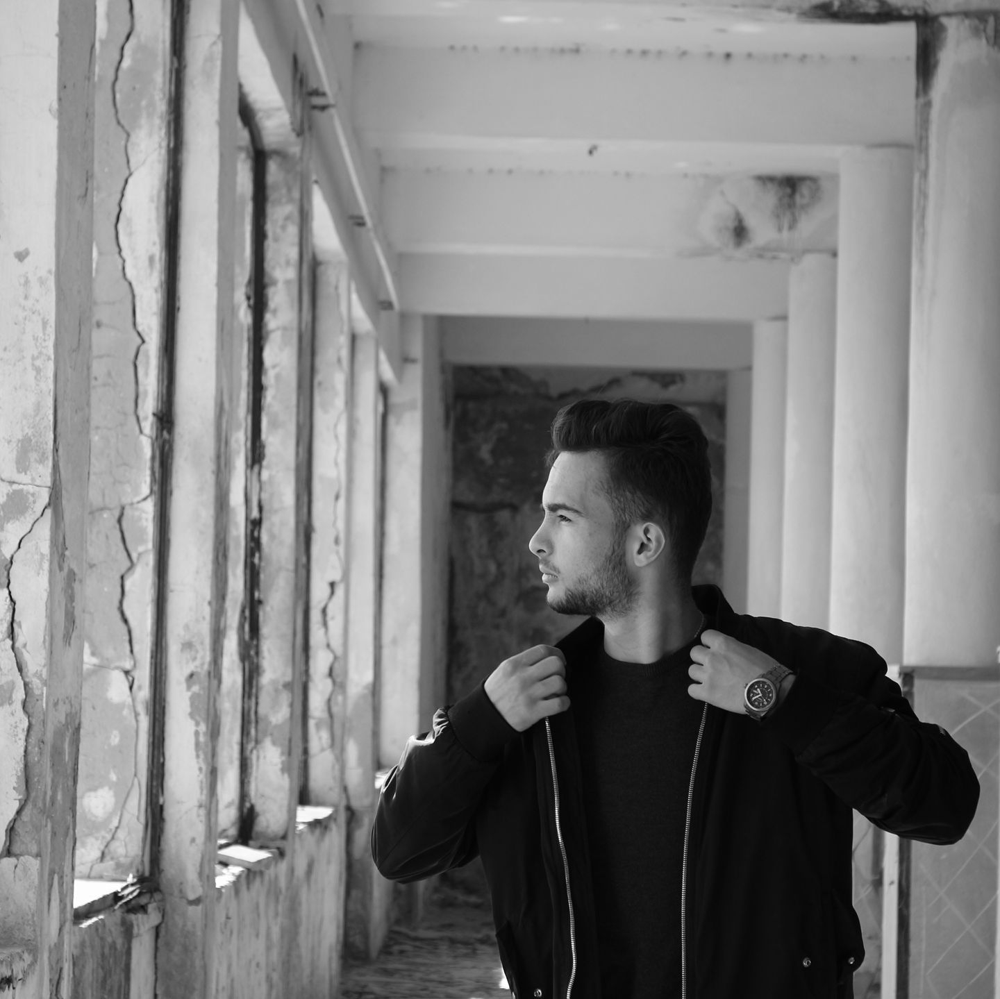

Hasan D. Kolleshi Stuff's
Photography by me!
Focus on things you love and let the world talk what they want! 20/05/2015
- Leica V-lux
- 400mm
- ƒ/5.6
- 1/1000
- 200
Fishing ship on sunset! 12/10/2016
- Leica V-lux
- 260mm
- ƒ/5.6
- 1/1000
- 400

Eyes never Lie! 23/03/2014
- Galaxy S3
- --
- ƒ/5.6
- 1/1000
- --

Put the sun on my Lighter! 01/06/2016
- Leica V-lux
- 80mm
- ƒ/4.6
- 1/2000
- 100

You can land here and i captured it.05/05/2015
- Canon Ixus
- 22.5 mm
- ƒ/5.6
- 1/1000
- 80
Images by Captured By Ani!


Me on Photos!

Shpesh here me pelqen te udhetoje, te le kujtime, te shijoje momentet ne vende te ndryshme dhe te pa shkelura nga une me pare. Kete gje me shume me pelqen ta ndaj me shoqerine time.22/09/2017
- iPhone 7
- 22.5 mm
- ƒ/5.6
- 1/1000
- 80

You don't know your power until you need to use those. 05/05/2015
- Canon 750D
- 40mm
- ƒ/5.6
- 1/4000
- 400

You can see me only when i want you to see me. 05/05/2015
- Nikon d3200
- 400
- ƒ/5.6
- 1/350
- 100

I put a lot of pressure on myself! I think something's not good enough, and i won't stop until i feel like i've made it.I'm never satisfied.05/05/2015
- Canon 750d
- 60mm
- ƒ/5.6
- 1/300
- 80

What color is more sad than Blue?!05/05/2015
- Nikon d3200
- 22.5 mm
- ƒ/5.6
- 1/60
- 800
Images by Elti Meshau
Shkrimet e mija!
Dritat e Qytetit!
Nen dritat e vlores qe pasqyroheshin ne detin paksa te trazuar, ishte nje drit e vogel e vogel qe ndizesh sa her qe nje force ere e thithte dhe e frynte! Ishte e ber mir , dhe pak peshtyme ne doren e tij kishte ngelur nga dredhja e atij pak qe kishte ne canten qe mbante gjithmon me vete! Ishte e mir qetsuese, smerzitej me ty, ste bezdiste, thjesht rrinte ne ate qetsin e bukur dhe digjej drejt dritave te neoneve qe ishin perpara nesh! Me pelqente qetsia dhe mirkuptimi ishte i qet dhe sfliste! Por mbaroi shpejt sepse nje tjt drit u be gati te ndiste pas perfundimit te saj! Kjo ishte me e mir trupi ishte ne form koni dhe i lemuar plotesisht, nje trup i mbushur mir, ishte momenti qe dhe kjo te tregonte nje pasqyrim sa do te vogel ne detin e madh! Vendos kengen e tij dhe muzika rrodhi si nje gjak ne arterien e kufies ishte qetsi! Ashtu supozohet te ishte! Ajo keng ishte nje kuti e madhe e te shkuares qe te bente nostalgjik dhe te prekte! Por mbulohesh me nje val "urrejtje" dhe pse ai kishte nevoj per ate keng.... Ehh... Ne ritmet e muzikes qe ai mendonte se e urrente e ndez dhe driten tjt ishte nje hapsir boshe e qet.. Ohh jet me vete.. Por koha kaloi dhe ajo u fik bashk me shum njerez... Skishte me.. Germoj ne cant dhe qjeti qesen e tij me fletat, i gezuar por pa bllokuesin e pambukt ishte e kot... Ja beri si ja beri dhe e gjeti nje te fundit e mblodhi ne mes, e rretulloj mir e mir dhe pak pershtym direkt dhe e sajoj, ishte e shpejt ashtu sic u be, mori shkrepsen me 3 fijet e fundjt, njera e keputur e tjetra su ndez... Ohhh ishte e fundit er po frynte... Smund ta linte pa e ndezur driten e fundit.... I doli perball eres dhe me sy paksa me lot gezimi e hidherimi e ndezi me bastin ne vetvete sic bente gjithmon e shpejt e shpejt! U ndez! Le te filloj dhe kjo pak qetsi tashme.... /span>
Zarf.
Ne nje nga ato mijera file qe kam ne ate boten e kycur virtuale te kompjuterit tim gjej nje dosje. Nje dosje qe sa here e shoh me kujton nje dhome te vogel. Nje dhome te vogel te cilen e quaj Makina e kohes. Sa here qe hy ne ate dhome orendit e saje jan kujtimet qe vitet me kan len. Nuk ka nje kolltuk ku ti mund te ulesh perpara nje televizori duke ngren kokoshka dhe te shikosh filmin tend te preferuar ose ndonje krevat ku ti mund te shtrihesh per te pushuar pas nje banje. Aty gjen nje kuti qe ka datat e jetes tende. Datat ku ti ke zgjedhur te udhetosh sa here qe futesh dashur ose pa dashur ne te. Jan ne zarfe te ndryshem. Ajo kuti eshte e vetmja librari qe ka ajo dhome. Por qe zarfet nuk perbejn asgje me shume se mijra dyer per te udhetuar ku ti ke qen. Disa jan te hapur ku ti mund ti ndryshosh. Por disa jan te vulosur, te pluhrosur ndoshta nga mos hapja kurr e tyre dhe disa te mbullur por te dukshem. Duke i vrojtuar nje nga nje ato me bie ne dore nje i pluhrosur. Mu dukesh se nuk isha ne te tashmen por ne te ardhmen pasi ishte shume i pademtuar por tymi i kishte ndryshuar ngjyren nga pluhuri qe kishte zen. E pastrova dhe e vendos ne nje tavolin te vogel afer nje stoli ku aty ishte vendi ku ai zarf kishte marr daten e tij te Caktuar. Cdo zarf kishte dy data, daten e krijimit te tij dhe ate te vulosjes se tij. Ky ishte i vetmi zarf qe kishte vetem krijimin e tij. nuk kishte as date per vulosje por as vendin nese nuk ishte i vulosur. Zarfi titullohej "Ti". E kuptova cili ishte, Ishte zarfi qe krijova per veten time. Akoma se kisha vulosur. Sepse akoma koha ime skishte mbaruar, Kisha akoma rafte bosh per te mbushur. E pastroj me delikates dhe e heq nga ai raft. Meritone me shume se te vendosesh ne ate raft ku zarfet pluhroseshin nga mosperkujdesja.
Njohje.
Jetojm ne bote me miliarda njerez dhe miliona karaktere dhe dhe shume pak bote mbrenda tyre. Te ralle jan te tillet qe jan te mbyllur por me horizont te madhe. Te rallet e vecant kuptojn sipas interesimit dhe vlersojn duke kuptuar mbrenda tyre. Kam shume dhe kaq te ngjashem. Kaq shum dhe kaq te rrall per te pare ne ate qe mendojn dhe ate qe jetojn. Pikpamje te ndryshme por te perputhshme ne ide "monotone". Kjo bote permban karaktere te rralla me bomb berthamore ne brendesi te tyre. Thell e me thell per te pare majen e nje fushe imagjinare.
Veshtirsi.
Ne jet kisha shume Huta. Huta te uritura, te egersuara... U dukesha si ushqim vetem qe mos te me linin te isha rivali i tyre. Luftuan ne cdo cep. Ne cdo ane u munduan. Por nuk munden te percanin ate cka te tjeret moren nga une. U munduan dhe akoma mundohen. Me perpara me friksonin dhe me benin qe te fusja koken posht jastekut. Isha i vogel dhe me dukesh e frikshme. Sot me duket qesharake. Se ata paskan qen thjesht disa qen lafarak qe lamatisnin lart e posht per te me trembur. Mbase jam rritur ose po llogjikoj ose mbase me ka ikur ajo mjergull qe me pengonte shikimin kur une friksohesha. Tashme gjithcka vertitet ashtu sic une e servir. Veshtir pasi lash dhe humba shume gjera ne kohen kur friksohesha dhe fusja koken nen jastek, por nese kerkon fitoren ate do arrish. Tashme e shoh rrugen. Po ashtu si ajo po me sheh mua.